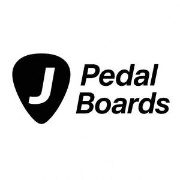

Trade Mark Journal No.2025/050 12 December 2025
UK00004297849 20 November 2025 (9,15)

- Class 9
- Guitar amplifiers; Amplifiers for bass guitars; Transportable guitar amplifiers; Effects pedals for guitars; Guitar effects processors; Musical instrument amplifiers; Amplifiers for musical instruments; Sound amplifiers for musical instruments; Electrical amplifiers for use with musical instruments; Musical instrument connectors; Electric and electronic effects units for musical instruments; Racks for amplifiers; Racks adapted to house audio apparatus; Electronic effect pedals for use with sound amplifiers; Audio effects apparatus; Amplifiers; Audio amplifiers; Tube amplifiers; Valve amplifiers; Power amplifiers; Sound amplifiers; Pre amplifiers.
- Class 15
- Guitars; Electric bass guitars; Electric guitars; Electric musical instruments; Electric and electronic musical instruments; Pedals for musical instruments; Music stands; Music stands adapted for use with musical instruments; Musical instruments; Musical instrument harnesses; Musical instrument straps; Musical instrument stands; Musical instrument cases; Pegs for musical instruments; Stands for musical instruments; Electronic musical apparatus and instruments; Straps for musical instruments; Cases for musical instruments; Sound effects pedals for musical instruments; Electronically operated musical instruments; Cases adapted for musical instruments; Sound effects machines being musical instruments; Carrying cases for musical instruments; Racks adapted to hold musical instruments.
J PEDALBOARDS LTD